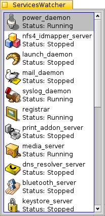

Monitor services status on Haiku OS
Download the latest ServicesWatcher
Perelandra0x309/serviceswatcher/releases/latest
Services Watcher is an application which will monitor the status of the system servers, Deskbar and Tracker. The running status of these services will automatically update as any of them quit or start. You may manually start, stop and restart these services on demand.

Developers are the primary target group for this application, since monitoring service status and manually starting and stopping services are common tasks when developing some applications. Hopefully this application is helpful when debugging, testing or recovering from unintended results.
The application is very straightforward. It presents a list of the system services, displaying their icon, name and running status. Right clicking on a service will display a pop up menu with some actions that can be performed. If a service is running, actions available are to stop or restart the service. If the service is not running, the only action is to start the service. There is also always a menu selection to show the Options window.
The Options window provides choices on how the list of services is displayed. The service name and status can be displayed on either one or two lines. The size of the icon and the font can be specified. The look of the window and whether it floats above all other windows is determined here as well. All changes to the options take effect immediately so that the effect can be seen while staying in the Options window. These options make it possible to customize how big, small, out of the way, visible, persistant, or hidden you want the application to be. This is an application which is to be used and useful without getting in the way of your normal tasks.
All selections in the Options window as well as the main window position on the screen are saved when the application quits and these settings are recalled the next time the application starts. This will provide a consistant look to the application between starts. If any or all of the options settings are not found or are not valid in the saved settings file, default values are applied to the options.
Thanks to @humdingerb for his QuickLaunch application which provided the inspiration for the graphical layout. My first attempt was a horrible design of BBoxes and BButtons. His source code also provided some coding tips and ideas I was able to use.